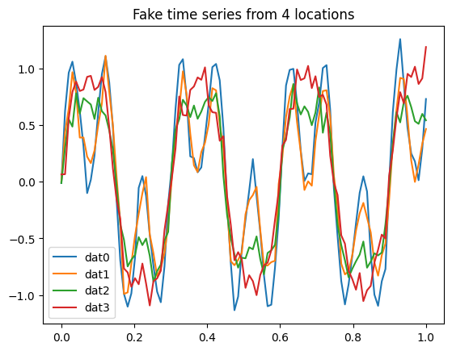
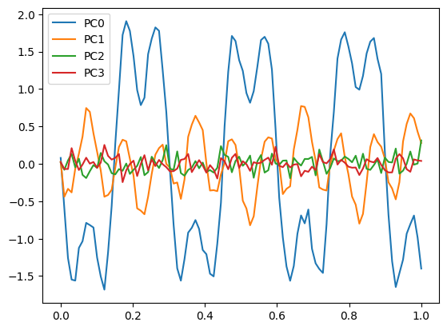
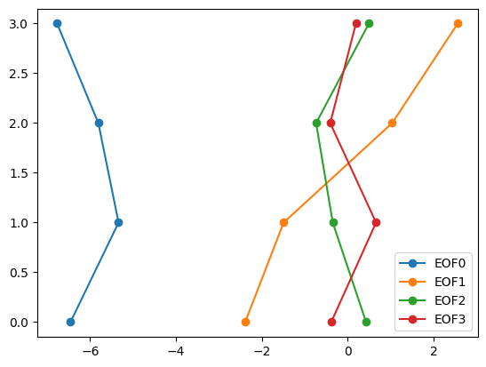
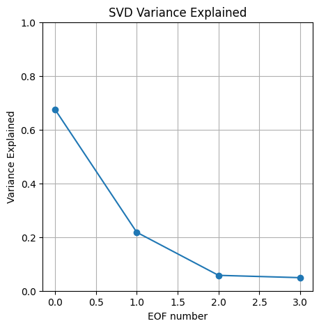
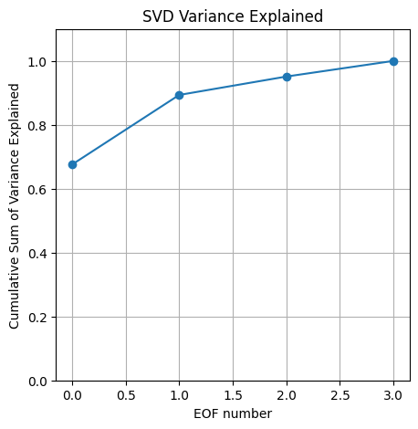
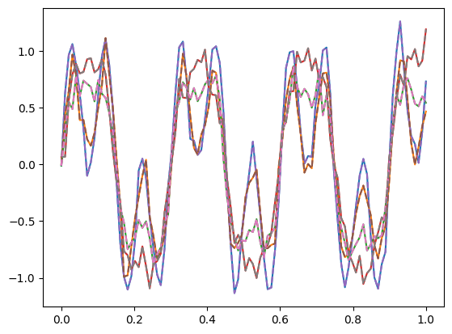
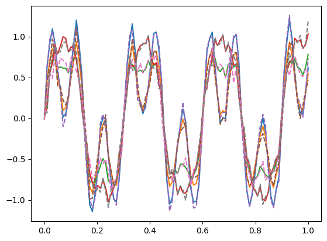
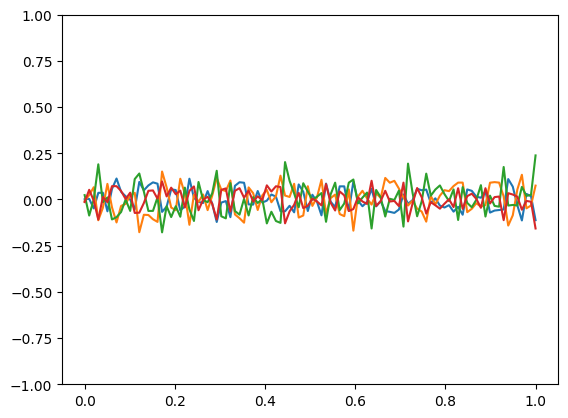

Singular Value Decomposition Example#
This notebook is derived from material by Eric Firing at the University of Hawaii.
%matplotlib inline
import numpy as np
import scipy
import matplotlib.pyplot as plt
Make some fake data
nx = 4
nt = 100
t = np.linspace(0, 1, nt)
y1 = np.sin(t * (2 * np.pi / 0.1))
y2 = np.sin(t * (2 * np.pi / 0.3))
plt.plot(t,y1,'k--')
plt.plot(t,y2,'k')
[<matplotlib.lines.Line2D at 0x7f854858fad0>]

dat0 = 0.7 * y1 + 0.7 * y2
dat1 = 0.5 * y1 + 0.6 * y2
dat2 = 0.25 * y1 + 0.8 * y2
dat3 = 0.1 * y1 + 1.0 * y2
dat = np.stack([dat0, dat1, dat2, dat3], axis=1)
# Save a copy of the pure signal.
signaldat = dat.copy()
#add noise
noisefac = 0.1
#np.random.seed(0) # make the "random" numbers repeatable
noise = noisefac * np.random.randn(nt, nx)
dat += noise
fig, ax = plt.subplots()
ax.plot(t, dat) # plot the 4 time series (columns)
ax.set_title("Fake time series from 4 locations")
ax.legend(["dat0", "dat1", "dat2", "dat3"]);

Compute SVD:
datmean = dat.mean(axis=0) # take the mean over time for each of the 4 locations
dat_dm = dat - datmean # subtract the mean from the dataset
# check the shape of our data matrix
dat_dm.shape
(100, 4)
We want our data matrix to have “space” (4) represented by each row, and “time” (100) represented by each column. This means we need to transpose the data matrix to get the shape (4, 100)
dat_transposed = dat_dm.T
dat_transposed.shape
(4, 100)
u, s, vt = scipy.linalg.svd(dat_transposed, full_matrices=False)
print(dat_dm.shape, u.shape, s.shape, vt.shape)
(100, 4) (4, 4) (4,) (4, 100)
Take a look at how SVD described our data in time (principal components)
# multipy S and Vt to get our PCs
PC = np.dot(vt.T, np.diag(s))
PC.shape
(100, 4)
plt.figure()
plt.plot(t, PC)
plt.legend(["PC0", "PC1", "PC2", "PC3"]);

plt.plot(t,y2,'k')
plt.plot(t,PC[:,0])
[<matplotlib.lines.Line2D at 0x7f85193c3590>]
plt.plot(t,y1,'k-')
plt.plot(t,PC[:,1])
[<matplotlib.lines.Line2D at 0x7f851937af90>]
Take a look at how SVD described our data in space (EOFs)
# multipy S and U to get our EOFs
EOF = np.dot(u, np.diag(s))
EOF
array([[-6.4578601 , -2.38786866, 0.42930671, -0.38302965],
[-5.33809254, -1.49220595, -0.3472703 , 0.66154253],
[-5.80893467, 1.036945 , -0.7347211 , -0.40671658],
[-6.76998881, 2.56462897, 0.49472832, 0.19272804]])
plt.plot(EOF,range(nx),'o-');
plt.legend(["EOF0", "EOF1", "EOF2", "EOF3"]);

How much variance does each singular value describe?
# SVD Variance Explained, divide S values by the sum of all S
var_exp = s / np.sum(s)
plt.figure(figsize=(5,5))
plt.plot(var_exp,'o-')
plt.xlabel('EOF number')
plt.ylabel('Variance Explained')
plt.title('SVD Variance Explained');
plt.ylim(0,1);
plt.grid('on');

plt.figure(figsize=(5,5))
plt.plot(np.cumsum(var_exp),'o-')
plt.xlabel('EOF number')
plt.ylabel('Cumulative Sum of Variance Explained')
plt.title('SVD Variance Explained');
plt.ylim(0,1.1);
plt.grid('on');

Reconstruct the data array
X = np.dot( np.dot(u, np.diag(s)), vt)
X.shape
(4, 100)
dat_reconstructed = X.T + datmean
plt.plot(t, dat_reconstructed, linestyle='-');
plt.plot(t, dat, linestyle='--');

Reconstruct only using the first two EOFs and PCs (this represented about 90% of the total variance in the original data)
X2 = np.dot( np.dot(u[:,:2], np.diag(s[:2])), vt[:2,:])
X2.shape
(4, 100)
dat_reconstructed2 = X2.T + datmean
plt.plot(t, dat_reconstructed2);
plt.plot(t, dat, linestyle='--');

Plot differences to see the details we aren’t capturing with just the first two EOFs
plt.plot(t, dat_reconstructed2 - dat);
plt.ylim(-1,1);
